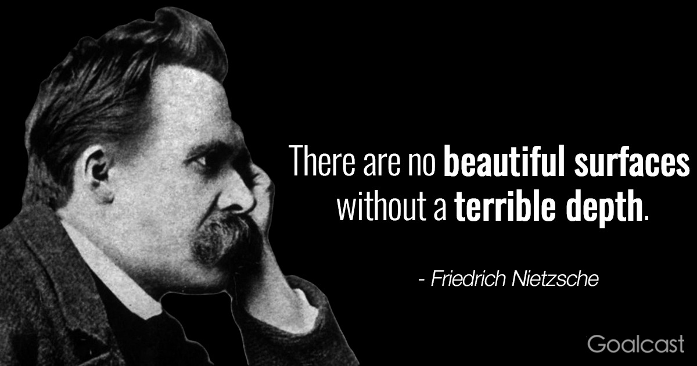

-

- 
-

Magazin online!
Dorința de a cunoaște este mult mai puternică decat dorința de a trăi
–Stephen Hawking
Site-ul Librăria online este destinat în mare parte cunoscatorilor de cosmologie și filosofie,ce nu își pot colecta informațiile de la orice sursa web sau în magazine,privind ori lipsa materialelor sau a interesului populației a acestor subiecte ori prețurile oferite ce influențează cererea de pe piață.
Web design by YellowRocketAgency